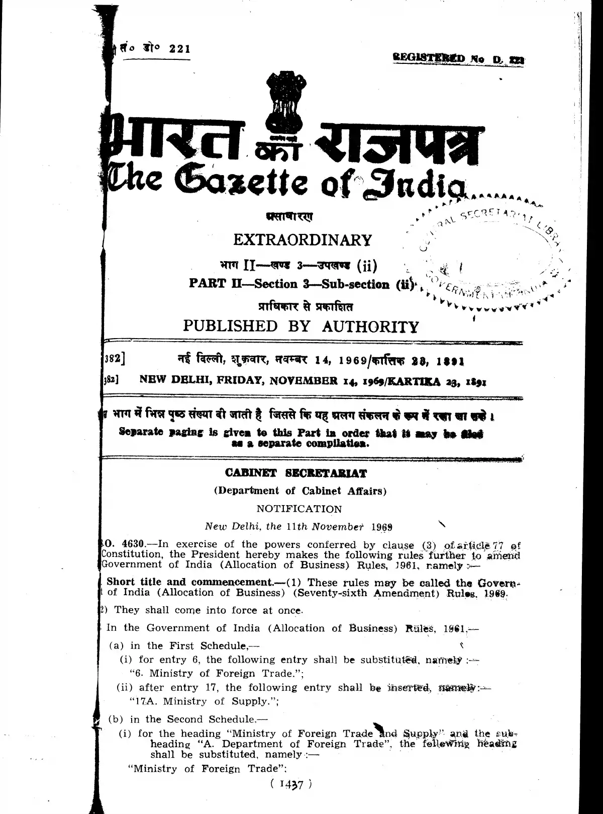
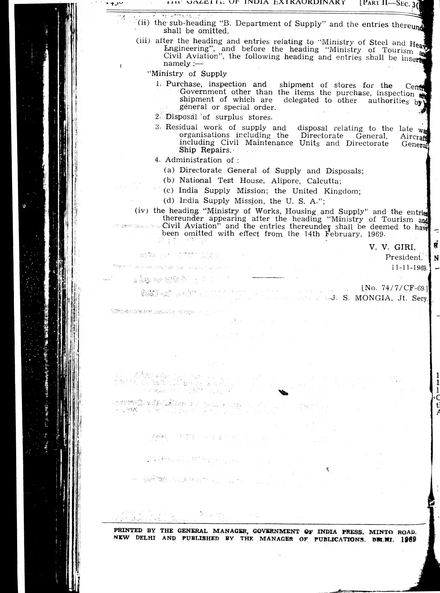

Amendment #76 (S.O. 4630, 1969)
6 changes: 2 to the First Schedule, 4 to the Second Schedule. 5 applied1 not applied
What it did to the ministries
- renamedMinistry of Foreign Trade and Supply is renamed Ministry of Foreign Trade change 1, 3 · histories: Foreign Trade
- renamedMinistry of Works, Housing & Supply is renamed Ministry of Supply change 2, 5 · histories: Supply
- shrankMinistry of Supply shrinks from 22 to 4 subjects change 2, 5 · histories: Supply
The order, page by page
Page 1 of 2

123Schedule 1 › entry 6
- 6. Ministry of Foreign Trade.
applied at schedule 1 › ministry 6 in the Rules after #76
read hindi missing
after Schedule 1 › entry 17
- 17A. Ministry of Supply.
applied at schedule 1 › ministry 17A in the Rules after #76
read hindi missing
Schedule 2 › Ministry of Foreign Trade and Supply; Schedule 2 › Ministry of Foreign Trade and Supply › Department of Foreign Trade
- Ministry of Foreign Trade
applied at schedule 2 › ministry Ministry of Foreign Trade in the Rules after #76
read hindi missing
Page 2 of 2

456Schedule 2 › Ministry of Foreign Trade and Supply › Department of Supply
not applied (the change could not be placed in the Rules as read; see How this document was read)
after Schedule 2 › Ministry of Steel and Hea Engineering
- Ministry of Supply
- 1. Purchase, inspection and shipment of stores for the Centr Government other than the items the purchase, inspection shipment of which are delegated to other authorities by general or special order.
- 2. Disposal of surplus stores.
- 3. Residual work of supply and disposal relating to the late wa organisations including the Directorate General, Aircraft including Civil Maintenance Units and Directorate General Ship Repairs.
- 4. Administration of :
- a. Directorate General of Supply and Disposals
and 3 more
- b. National Test House, Alipore, Calcutta
- c. India Supply Mission; the United Kingdom
- d. India Supply Mission, the U. S. A.
applied at schedule 2 › ministry Ministry of Supply in the Rules after #76
read hindi missing, states inferred loose
Schedule 2 › Ministry of Works, Housing and Supply
applied at schedule 2 › ministry in the Rules after #76
How this document was read
Edits to the reading
| Date | By | Edit | Before → after |
|---|---|---|---|
| 12 November 2026 | claude | word corrected |
Changes placed by an inference rule
| Change | Rule | Status | What |
|---|---|---|---|
| 5 | loose | accepted | change 5: ministry Ministry of Steel and Hea Engineering taken for ministry MINISTRY OF STEEL & HEAVY ENGINEERING, named loosely |
Known issues
| Change | Issue | Known as |
|---|---|---|
| 4 | change 4: no ministry Ministry of Foreign Trade and Supply under schedule 2 | A unit cited by a name the Second Schedule does not have |
From the Government of India (Allocation of Business) Rules, 1961 and their amendments, as published by the Cabinet Secretariat (cabsec.gov.in), read by orgpedia. The readings of the older scanned gazettes have known gaps.